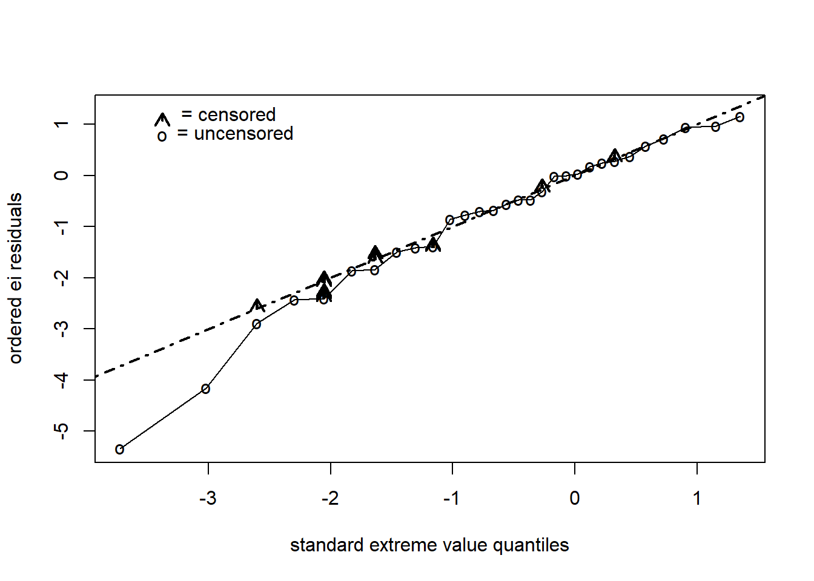

Nesta etapa vamos começar a trabalhar com modelos de regressão paramétricos.
Os modelos que vamos ver se denominam modelos de tempo de falha (vida) acelerado TFA (AFT).
O conjunto de dados a seguir chamado “anderson.xlsx” consiste em tempos de remissão em 42 pacientes com leucemia, metade dos quais recebem uma certa nova terapia de tratamento e a outra metade recebe uma terapia de tratamento padrão. A variável de exposição de interesse é o tratamento (Rx = 0 se novo tratamento, Rx = 1 se tratamento padrão).
Duas outras variáveis para controle como potenciais confundidores são a contagem de glóbulos brancos (ou seja, logwbc) e sexo. O status de falha é definido pela variável recaída (0 se censurado, 1 se falhar).
tempo status sexo logwbc
Min. : 1.00 Min. :0.0000 Min. :0.0000 Min. :1.450
1st Qu.: 6.00 1st Qu.:0.0000 1st Qu.:0.0000 1st Qu.:2.303
Median :10.50 Median :1.0000 Median :0.0000 Median :2.800
Mean :12.88 Mean :0.7143 Mean :0.4762 Mean :2.930
3rd Qu.:18.50 3rd Qu.:1.0000 3rd Qu.:1.0000 3rd Qu.:3.490
Max. :35.00 Max. :1.0000 Max. :1.0000 Max. :5.000
Rx
Min. :0.0
1st Qu.:0.0
Median :0.5
Mean :0.5
3rd Qu.:1.0
Max. :1.0
leuc.wei.comp <-survreg(Surv(tempo, status) ~ sexo + logwbc + Rx, data = dados, dist ="weibull")summary(leuc.wei.comp)
Call:
survreg(formula = Surv(tempo, status) ~ sexo + logwbc + Rx, data = dados,
dist = "weibull")
Value Std. Error z p
(Intercept) 5.462 0.351 15.58 < 2e-16
sexo -0.156 0.179 -0.87 0.38350
logwbc -0.792 0.105 -7.54 4.8e-14
Rx -0.722 0.201 -3.59 0.00034
Log(scale) -0.815 0.144 -5.65 1.6e-08
Scale= 0.443
Weibull distribution
Loglik(model)= -89.7 Loglik(intercept only)= -116.4
Chisq= 53.42 on 3 degrees of freedom, p= 1.5e-11
Number of Newton-Raphson Iterations: 7
n= 42
Análise de resíduos
##=====================================================================qq.reg.resid.r<-function(data,time,status,fit,quantile,xlab){##=================================## Purpose: For parametric regression models, this constructs a## qq-plot of ordered residuals e_i=(y_i-yhat_i)/sigmahat against## the log-parametric standard quantiles z_i of either the## "weibull", "lognormal", or "loglogistic" distribution.##--------------------------------------------------------------------------## NOTE: This can also be used for fitting a single sample of survival## times to a parametric model. Since there are no covariates## remember to type survReg(Surv(...,...)~1,dist="...",data=...) ## in order to estimate the intercept mu.##---------------------------------------------------------------------------## Arguments: data = data.frame## time = survival time variable name in data.frame## status = name of status variable in data.frame## fit = a survreg object## quantile = "qweibull" or "qnorm" or "qlogis" ## xlab = "type your label" E.g., "standard extreme value quantiles"##------------------------------------------------------------------------------## Author: Mara Tableman, Revises: 6 March, 2013##==============================================================================temp<-datatemp$time<-timetemp$status<-statustemp$ei<-(log(temp$time)-predict(fit,type="lp"))/fit$scaletemp<-temp[order(temp$ei), ]con<-abs(min(temp$ei))+.00001temp$ei<-temp$ei+con km.fit<-survfit(Surv(ei,status)~1,data=temp)##temp$km.surv<-summary(km.fit,censor=T)$survtemp$km.surv<-summary(km.fit, time=temp$ei, extend=T)$survif (quantile =="qweibull") {zi<-as.numeric(qweibull(1-temp$km.surv,1,1))k<-nrow(temp)for (i in1:k){if (zi[i]!=-Inf&& zi[i]!=Inf ) zi[i]<-log(zi[i])}temp$zi<-zifor(i in1:k){ if (temp$zi[i]==-Inf){ surv.max.1<-max(temp$km.surv[temp$status==1]) d<-1-surv.max.1 surv.pu<-1-d/2 temp$zi[i]<-log(qweibull(1-surv.pu,1,1))}}for (i in1:k){ if (temp$zi[i]==Inf){ d<-min(temp$km.surv[temp$km.surv >0]) surv.pl<-d/2 temp$zi[i]<-log(qweibull(1-surv.pl,1,1))}}}if (quantile =="qlogis") {zi<-as.numeric(qlogis(1-temp$km.surv,0,1))k<-nrow(temp)for (i in1:k){if (zi[i]!=-Inf&& zi[i]!=Inf ) zi[i]<-zi[i]}temp$zi<-zifor(i in1:k){ if (temp$zi[i]==-Inf){ surv.max.1<-max(temp$km.surv[temp$status==1]) d<-1-surv.max.1 surv.pu<-1-d/2 temp$zi[i]<-qlogis(1-surv.pu,0,1)}}for (i in1:k){ if (temp$zi[i]==Inf){ d<-min(temp$km.surv[temp$km.surv >0]) surv.pl<-d/2 temp$zi[i]<-qlogis(1-surv.pl,0,1)}}}if (quantile =="qnorm"){ zi<-as.numeric(qnorm(1-temp$km.surv,0,1))k<-nrow(temp)for (i in1:k){if (zi[i]!=-Inf&& zi[i]!=Inf ) zi[i]<-zi[i]}temp$zi<-zifor(i in1:k){ if (temp$zi[i]==-Inf){ surv.max.1<-max(temp$km.surv[temp$status==1]) d<-1-surv.max.1 surv.pu<-1-d/2 temp$zi[i]<-qnorm(1-surv.pu,0,1)}}for (i in1:k){ if (temp$zi[i]==Inf){ d<-min(temp$km.surv[temp$km.surv >0]) surv.pl<-d/2 temp$zi[i]<-qnorm(1-surv.pl,0,1)}}} temp$ei<-temp$ei-con##print(temp)plot(temp$zi,temp$ei,xlab=xlab,ylab="ordered ei residuals",type="n",xlim=c(min(temp$zi),max(temp$zi)),ylim=c(min(temp$ei),max(temp$ei)+.15))points(temp$zi[temp$status==0],temp$ei[temp$status==0],pch=".",cex=3)points(temp$zi[temp$status==1],temp$ei[temp$status==1],pch="o",cex=1)lines(temp$zi[temp$status==1],temp$ei[temp$status==1],lty=1,lwd=1)k<-nrow(temp)for(i in1:k){ if (temp$status[i]==0)arrows(temp$zi[i],temp$ei[i],temp$zi[i],temp$ei[i]+.15,code=2,length=.12,lwd=2.01)}abline(a=0,b=1,lty=4,lwd=2)usr<-par("usr")arrows(.9*usr[1]+.1*usr[2],.07*usr[3]+.93*usr[4],.9*usr[1]+.1*usr[2],.07*usr[3]+.93*usr[4]+.15,code=2,length=.12,lwd=2.01)text(.8*usr[1]+.2*usr[2],.05*usr[3]+.95*usr[4],"= censored")points(.9*usr[1]+.1*usr[2],.11*usr[3]+.89*usr[4],pch="o")text(.79*usr[1]+.21*usr[2],.1*usr[3]+.90*usr[4], "= uncensored") on.exit()"qq.reg.resid:done"}qq.reg.resid.r(dados,dados$tempo,dados$status, leuc.wei.comp,"qweibull","standard extreme value quantiles")

[1] "qq.reg.resid:done"
##Example 2: ##fit.weib<-survreg(Surv(weeks,status)~1,dist="weibull",data=aml1)##qq.reg.resid.r(aml1,aml1$weeks,aml1$status,fit.weib,"qweibull","standard extreme value quantiles")##==================================================